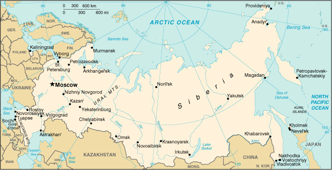

|
Russia | |
| Introduction Geography People Government Economy Communications Transportation Military Transnational Issues | ||
|  | ||
| Russia | Introduction | Top of Page |
| Background: | The defeat of the Russian Empire in World War I led to the seizure of power by the communists and the formation of the USSR. The brutal rule of Josef STALIN (1924-53) strengthened Russian dominance of the Soviet Union at a cost of tens of millions of lives. The Soviet economy and society stagnated in the following decades until General Secretary Mikhail GORBACHEV (1985-91) introduced glasnost (openness) and perestroika (restructuring) in an attempt to modernize communism, but his initiatives inadvertently released forces that by December 1991 splintered the USSR into 15 independent republics. Since then, Russia has struggled in its efforts to build a democratic political system and market economy to replace the strict social, political, and economic controls of the communist period. |
| Russia | Geography | Top of Page |
| Location: | Northern Asia (that part west of the Urals is sometimes included with Europe), bordering the Arctic Ocean, between Europe and the North Pacific Ocean |
| Geographic coordinates: | 60 00 N, 100 00 E |
| Map references: | Asia |
| Area: |
total:
17,075,200 sq km
land: 16,995,800 sq km water: 79,400 sq km |
| Area - comparative: | slightly less than 1.8 times the size of the US |
| Land boundaries: |
total:
19,961 km
border countries: Azerbaijan 284 km, Belarus 959 km, China (southeast) 3,605 km, China (south) 40 km, Estonia 294 km, Finland 1,313 km, Georgia 723 km, Kazakhstan 6,846 km, North Korea 19 km, Latvia 217 km, Lithuania (Kaliningrad Oblast) 227 km, Mongolia 3,485 km, Norway 167 km, Poland (Kaliningrad Oblast) 206 km, Ukraine 1,576 km |
| Coastline: | 37,653 km |
| Maritime claims: |
continental shelf:
200-m depth or to the depth of exploitation
exclusive economic zone: 200 NM territorial sea: 12 NM |
| Climate: | ranges from steppes in the south through humid continental in much of European Russia; subarctic in Siberia to tundra climate in the polar north; winters vary from cool along Black Sea coast to frigid in Siberia; summers vary from warm in the steppes to cool along Arctic coast |
| Terrain: | broad plain with low hills west of Urals; vast coniferous forest and tundra in Siberia; uplands and mountains along southern border regions |
| Elevation extremes: |
lowest point:
Caspian Sea -28 m
highest point: Gora El'brus 5,633 m |
| Natural resources: |
wide natural resource base including major deposits of oil, natural gas, coal, and many strategic minerals, timber
note: formidable obstacles of climate, terrain, and distance hinder exploitation of natural resources |
| Land use: |
arable land:
8%
permanent crops: 0% permanent pastures: 4% forests and woodland: 46% other: 42% (1993 est.) |
| Irrigated land: | 40,000 sq km (1993 est.) |
| Natural hazards: | permafrost over much of Siberia is a major impediment to development; volcanic activity in the Kuril Islands; volcanoes and earthquakes on the Kamchatka Peninsula |
| Environment - current issues: | air pollution from heavy industry, emissions of coal-fired electric plants, and transportation in major cities; industrial, municipal, and agricultural pollution of inland waterways and sea coasts; deforestation; soil erosion; soil contamination from improper application of agricultural chemicals; scattered areas of sometimes intense radioactive contamination; ground water contamination from toxic waste |
| Environment - international agreements: |
party to:
Air Pollution, Air Pollution-Nitrogen Oxides, Air Pollution-Sulphur 85, Antarctic-Environmental Protocol, Antarctic-Marine Living Resources, Antarctic Seals, Antarctic Treaty, Biodiversity, Climate Change, Endangered Species, Environmental Modification, Hazardous Wastes, Law of the Sea, Marine Dumping, Nuclear Test Ban, Ozone Layer Protection, Ship Pollution, Tropical Timber 83, Wetlands, Whaling
signed, but not ratified: Air Pollution-Sulphur 94, Climate Change-Kyoto Protocol |
| Geography - note: | largest country in the world in terms of area but unfavorably located in relation to major sea lanes of the world; despite its size, much of the country lacks proper soils and climates (either too cold or too dry) for agriculture |
| Russia | People | Top of Page |
| Population: | 145,470,197 (July 2001 est.) |
| Age structure: |
0-14 years:
17.41% (male 12,915,026; female 12,405,341)
15-64 years: 69.78% (male 49,183,000; female 52,320,962) 65 years and over: 12.81% (male 5,941,944; female 12,703,924) (2001 est.) |
| Population growth rate: | -0.35% (2001 est.) |
| Birth rate: | 9.35 births/1,000 population (2001 est.) |
| Death rate: | 13.85 deaths/1,000 population (2001 est.) |
| Net migration rate: | 0.98 migrant(s)/1,000 population (2001 est.) |
| Sex ratio: |
at birth:
1.05 male(s)/female
under 15 years: 1.04 male(s)/female 15-64 years: 0.94 male(s)/female 65 years and over: 0.47 male(s)/female total population: 0.88 male(s)/female (2001 est.) |
| Infant mortality rate: | 20.05 deaths/1,000 live births (2001 est.) |
| Life expectancy at birth: |
total population:
67.34 years
male: 62.12 years female: 72.83 years (2001 est.) |
| Total fertility rate: | 1.27 children born/woman (2001 est.) |
| HIV/AIDS - adult prevalence rate: | 0.18% (1999 est.) |
| HIV/AIDS - people living with HIV/AIDS: | 130,000 (1999 est.) |
| HIV/AIDS - deaths: | 850 (1999 est.) |
| Nationality: |
noun:
Russian(s)
adjective: Russian |
| Ethnic groups: | Russian 81.5%, Tatar 3.8%, Ukrainian 3%, Chuvash 1.2%, Bashkir 0.9%, Byelorussian 0.8%, Moldavian 0.7%, other 8.1% |
| Religions: | Russian Orthodox, Muslim, other |
| Languages: | Russian, other |
| Literacy: |
definition:
age 15 and over can read and write
total population: 98% male: 100% female: 97% (1989 est.) |
| Russia | Government | Top of Page |
| Country name: |
conventional long form:
Russian Federation
conventional short form: Russia local long form: Rossiyskaya Federatsiya local short form: Rossiya former: Russian Empire, Russian Soviet Federative Socialist Republic |
| Government type: | federation |
| Capital: | Moscow |
| Administrative divisions: |
49 oblasts (oblastey, singular - oblast), 21 republics* (respublik, singular - respublika), 10 autonomous okrugs**(avtonomnykh okrugov, singular - avtonomnyy okrug), 6 krays*** (krayev, singular - kray), 2 federal cities (singular - gorod)****, and 1 autonomous oblast*****(avtonomnaya oblast'); Adygeya (Maykop)*, Aginskiy Buryatskiy (Aginskoye)**, Altay (Gorno-Altaysk)*, Altayskiy (Barnaul)***, Amurskaya (Blagoveshchensk), Arkhangel'skaya, Astrakhanskaya, Bashkortostan (Ufa)*, Belgorodskaya, Bryanskaya, Buryatiya (Ulan-Ude)*, Chechnya (Groznyy)*, Chelyabinskaya, Chitinskaya, Chukotskiy (Anadyr')**, Chuvashiya (Cheboksary)*, Dagestan (Makhachkala)*, Evenkiyskiy (Tura)**, Ingushetiya (Nazran')*, Irkutskaya, Ivanovskaya, Kabardino-Balkariya (Nal'chik)*, Kaliningradskaya, Kalmykiya (Elista)*, Kaluzhskaya, Kamchatskaya (Petropavlovsk-Kamchatskiy), Karachayevo-Cherkesiya (Cherkessk)*, Kareliya (Petrozavodsk)*, Kemerovskaya, Khabarovskiy***, Khakasiya (Abakan)*, Khanty-Mansiyskiy (Khanty-Mansiysk)**, Kirovskaya, Komi (Syktyvkar)*, Koryakskiy (Palana)**, Kostromskaya, Krasnodarskiy***, Krasnoyarskiy***, Kurganskaya, Kurskaya, Leningradskaya, Lipetskaya, Magadanskaya, Mariy-El (Yoshkar-Ola)*, Mordoviya (Saransk)*, Moskovskaya, Moskva (Moscow)****, Murmanskaya, Nenetskiy (Nar'yan-Mar)**, Nizhegorodskaya, Novgorodskaya, Novosibirskaya, Omskaya, Orenburgskaya, Orlovskaya (Orel), Penzenskaya, Permskaya, Komi-Permyatskiy (Kudymkar)**, Primorskiy (Vladivostok)***, Pskovskaya, Rostovskaya, Ryazanskaya, Sakha (Yakutsk)*, Sakhalinskaya (Yuzhno-Sakhalinsk), Samarskaya, Sankt-Peterburg (Saint Petersburg)****, Saratovskaya, Severnaya Osetiya-Alaniya [North Ossetia] (Vladikavkaz)*, Smolenskaya, Stavropol'skiy***, Sverdlovskaya (Yekaterinburg), Tambovskaya, Tatarstan (Kazan')*, Taymyrskiy (Dudinka)**, Tomskaya, Tul'skaya, Tverskaya, Tyumenskaya, Tyva (Kyzyl)*, Udmurtiya (Izhevsk)*, Ul'yanovskaya, Ust'-Ordynskiy Buryatskiy (Ust'-Ordynskiy)**, Vladimirskaya, Volgogradskaya, Vologodskaya, Voronezhskaya, Yamalo-Nenetskiy (Salekhard)**, Yaroslavskaya, Yevreyskaya*****; note - when using a place name with an adjectival ending 'skaya' or 'skiy,' the word Oblast' or Avonomnyy Okrug or Kray should be added to the place name
note: the autonomous republics of Chechnya and Ingushetiya were formerly the autonomous republic of Checheno-Ingushetia (the boundary between Chechnya and Ingushetia has yet to be determined); administrative divisions have the same names as their administrative centers (exceptions have the administrative center name following in parentheses) |
| Independence: | 24 August 1991 (from Soviet Union) |
| National holiday: | Russia Day, 12 June (1990) |
| Constitution: | adopted 12 December 1993 |
| Legal system: | based on civil law system; judicial review of legislative acts |
| Suffrage: | 18 years of age; universal |
| Executive branch: |
chief of state:
President Vladimir Vladimirovich PUTIN (acting president since 31 December 1999, president since 7 May 2000)
head of government: Premier Mikhail Mikhaylovich KASYANOV (since 7 May 2000); First Deputy Premier Aleksey Leonidovich KUDRIN (since 18 May 2000), Deputy Premiers Aleksey Vasilyevich GORDEYEV (since 20 May 2000), Viktor Borisovich KHRISTENKO (since 31 May 1999), Ilya Iosifovich KLEBANOV (since 31 May 1999), Valentina Ivanovna MATVIYENKO (since 22 September 1998) cabinet: Ministries of the Government or "Government" composed of the premier and his deputies, ministers, and other agency heads; all are appointed by the president note: there is also a Presidential Administration (PA) that provides staff and policy support to the president, drafts presidential decrees, and coordinates policy among government agencies; a Security Council also reports directly to the president elections: president elected by popular vote for a four-year term; election last held 26 March 2000 (next to be held NA 2004); note - no vice president; if the president dies in office, cannot exercise his powers because of ill health, is impeached, or resigns, the premier succeeds him; the premier serves as acting president until a new presidential election is held, which must be within three months; premier appointed by the president with the approval of the Duma election results: Vladimir Vladimirovich PUTIN elected president; percent of vote - PUTIN 52.9%, Gennadiy Aadreyevich ZYUGANOV 29.2%, Grigoriy Alekseyevich YAVLINSKIY 5.8% |
| Legislative branch: |
bicameral Federal Assembly or Federalnoye Sobraniye consists of the Federation Council or Sovet Federatsii (178 seats; as of July 2000, members appointed by the top executive and legislative officials in each of the 89 federal administrative units - oblasts, krays, republics, autonomous okrugs and oblasts, and the federal cities of Moscow and Saint Petersburg; members serve four-year terms) and the State Duma or Gosudarstvennaya Duma (450 seats; half elected by proportional representation from party lists winning at least 5% of the vote, and half from single-member constituencies; members are elected by direct popular vote to serve four-year terms)
elections: State Duma - last held 19 December 1999 (next to be held NA December 2003) election results: State Duma - percent of vote received by parties clearing the 5% threshold entitling them to a proportional share of the 225 party list seats - KPRF 24.29%, Unity 23.32%, OVR 13.33%, Union of Right Forces 8.52%, LDPR 5.98%, Yabloko 5.93%; seats by party - KPRF 113, Unity 72, OVR 67, Union of Rightist Forces 29, LDPR 17, Yabloko 21, other 16, independents 106, repeat election required 8, vacant 1 |
| Judicial branch: | Constitutional Court; Supreme Court; Superior Court of Arbitration; judges for all courts are appointed for life by the Federation Council on the recommendation of the president |
| Political parties and leaders: |
Agrarian Party [Mikhail Ivanovich LAPSHIN]; Communist Party of the Russian Federation or KPRF [Gennadiy Andreyevich ZYUGANOV]; Fatherland-All Russia or OVR [Yuriy Mikhailovich LUZHKOV]; Liberal Democratic Party of Russia or LDPR [Vladimir Volfovich ZHIRINOVSKIY]; Union of Right Forces [Anatoliy Borisovich CHUBAYS, Yegor Timurovich GAYDAR, Irina Mutsuovna KHAKAMADA, Boris Yefimovich NEMTSOV]; Unity [Sergey Kuzhugetovich SHOYGU]; Yabloko Bloc [Grigoriy Alekseyevich YAVLINSKIY]
note: some 150 political parties, blocs, and movements registered with the Justice Ministry as of the 19 December 1998 deadline to be eligible to participate in the 19 December 1999 Duma elections; of these, 36 political organizations actually qualified to run slates of candidates on the Duma party list ballot, 6 parties cleared the 5% threshold to win a proportional share of the 225 party seats in the Duma, 9 other organizations hold seats in the Duma: Bloc of Nikolayev and Academician Fedorov, Congress of Russian Communities, Movement in Support of the Army, Our Home Is Russia, Party of Pensioners, Power to the People, Russian All-People's Union, Russian Socialist Party, and Spiritual Heritage; primary political blocs include pro-market democrats - (Yabloko Bloc and Union of Right Forces), anti-market and/or ultranationalist (Communist Party of the Russian Federation and Liberal Democratic Party of Russia) |
| Political pressure groups and leaders: | NA |
| International organization participation: | APEC, ASEAN (dialogue partner), BIS, BSEC, CBSS, CCC, CE, CERN (observer), CIS, EAPC, EBRD, ECE, ESCAP, G- 8, IAEA, IBRD, ICAO, ICC, ICFTU, ICRM, IDA, IFC, IFRCS, IHO, ILO, IMF, IMO, Inmarsat, Intelsat, Interpol, IOC, IOM (observer), ISO, ITU, LAIA (observer), MINURSO, MONUC, NAM (guest), NSG, OAS (observer), OPCW, OSCE, PCA, PFP, UN, UN Security Council, UNAMSIL, UNCTAD, UNESCO, UNHCR, UNIDO, UNIKOM, UNITAR, UNMEE, UNMIBH, UNMIK, UNMOP, UNOMIG, UNTAET, UNTSO, UPU, WFTU, WHO, WIPO, WMO, WToO, WTrO (observer), ZC |
| Diplomatic representation in the US: |
chief of mission:
Ambassador Yuriy Viktorovich USHAKOV
chancery: 2650 Wisconsin Avenue NW, Washington, DC 20007 telephone: [1] (202) 298-5700, 5701, 5704, 5708 FAX: [1] (202) 298-5735 consulate(s) general: New York, San Francisco, and Seattle |
| Diplomatic representation from the US: |
chief of mission:
Ambassador James F. COLLINS
embassy: Novinskiy Bul'var 19/23, 121099 Moscow mailing address: APO AE 09721 telephone: [7] (095) 728-5000 FAX: [7] (095) 728-5203 consulate(s) general: Saint Petersburg, Vladivostok, Yekaterinburg |
| Flag description: | three equal horizontal bands of white (top), blue, and red |
| Russia | Economy | Top of Page |
| Economy - overview: | A decade after the implosion of the Soviet Union in 1991, Russia is still struggling to establish a modern market economy and achieve strong economic growth. In contrast to its trading partners in Central Europe - which were able to overcome the initial production declines that accompanied the launch of market reforms within three to five years - Russia saw its economy contract for five years, as the executive and legislature dithered over the implementation of many of the basic foundations of a market economy. Russia achieved a slight recovery in 1997, but the government's stubborn budget deficits and the country's poor business climate made it vulnerable when the global financial crisis swept through in 1998. The crisis culminated in the August depreciation of the ruble, a debt default by the government, and a sharp deterioration in living standards for most of the population. The economy rebounded in 1999 and 2000, buoyed by the competitive boost from the weak ruble and a surging trade surplus fueled by rising world oil prices. This recovery, along with a renewed government effort in 2000 to advance lagging structural reforms, have raised business and investor confidence over Russia's prospects in its second decade of transition. Yet serious problems persist. Russia remains heavily dependent on exports of commodities, particularly oil, natural gas, metals, and timber, which account for over 80% of exports, leaving the country vulnerable to swings in world prices. Russia's agricultural sector remains beset by uncertainty over land ownership rights, which has discouraged needed investment and restructuring. Another threat is negative demographic trends, fueled by low birth rates and a deteriorating health situation - including an alarming rise in AIDS cases - that have contributed to a nearly 2% drop in the population since 1992. Russia's industrial base is increasingly dilapidated and must be replaced or modernized if the country is to achieve sustainable economic growth. Other problems include widespread corruption, capital flight, and brain drain. |
| GDP: | purchasing power parity - $1.12 trillion (2000 est.) |
| GDP - real growth rate: | 6.3% (2000 est.) |
| GDP - per capita: | purchasing power parity - $7,700 (2000 est.) |
| GDP - composition by sector: |
agriculture:
7%
industry: 34% services: 59% (1999 est.) |
| Population below poverty line: | 40% (1999 est.) |
| Household income or consumption by percentage share: |
lowest 10%:
1.7%
highest 10%: 38.7% (1998) |
| Inflation rate (consumer prices): | 20.6% (2000 est.) |
| Labor force: | 66 million (1997) |
| Labor force - by occupation: | agriculture 15%, industry 30%, services 55% (1999 est.) |
| Unemployment rate: | 10.5% (2000 est.), plus considerable underemployment |
| Budget: |
revenues:
$40 billion
expenditures: $33.7 billion, including capital expenditures of $NA (2000 est.) |
| Industries: | complete range of mining and extractive industries producing coal, oil, gas, chemicals, and metals; all forms of machine building from rolling mills to high-performance aircraft and space vehicles; shipbuilding; road and rail transportation equipment; communications equipment; agricultural machinery, tractors, and construction equipment; electric power generating and transmitting equipment; medical and scientific instruments; consumer durables, textiles, foodstuffs, handicrafts |
| Industrial production growth rate: | 8.8% (2000 est.) |
| Electricity - production: | 798.065 billion kWh (1999) |
| Electricity - production by source: |
fossil fuel:
66.31%
hydro: 19.79% nuclear: 13.9% other: 0% (1999) |
| Electricity - consumption: | 728.2 billion kWh (1999) |
| Electricity - exports: | 20 billion kWh (1999) |
| Electricity - imports: | 6 billion kWh (1999) |
| Agriculture - products: | grain, sugar beets, sunflower seed, vegetables, fruits; beef, milk |
| Exports: | $105.1 billion (2000 est.) |
| Exports - commodities: | petroleum and petroleum products, natural gas, wood and wood products, metals, chemicals, and a wide variety of civilian and military manufactures |
| Exports - partners: | US 8.8%, Germany 8.5%, Ukraine 6.5%, Belarus 5.1%, Italy 5%, Netherlands 4.8% (1999) |
| Imports: | $44.2 billion (2000 est.) |
| Imports - commodities: | machinery and equipment, consumer goods, medicines, meat, grain, sugar, semifinished metal products |
| Imports - partners: | Germany 13.8%, Belarus 10.7%, Ukraine 8.3%, US 7.9%, Kazakhstan 4.6%, Italy 3.8% (1999) |
| Debt - external: | $163 billion (2000 est.) |
| Economic aid - recipient: | $8.523 billion (1995) |
| Currency: | Russian ruble (RUR) |
| Currency code: | RUR |
| Exchange rates: |
Russian rubles per US dollar - 28.3592 (January 2001), 28.1292 (2000), 24.6199 (1999), 9.7051 (1998), 5,785 (1997), 5,121 (1996)
note: the post-1 January 1998 ruble is equal to 1,000 of the pre-1 January 1998 rubles |
| Fiscal year: | calendar year |
| Russia | Communications | Top of Page |
| Telephones - main lines in use: | 30 million (1998) |
| Telephones - mobile cellular: | 2.5 million (October 2000) |
| Telephone system: |
general assessment:
the telephone system has undergone significant changes in the 1990s; there are more than 1,000 companies licensed to offer communication services; access to digital lines has improved, particularly in urban centers; Internet and e-mail services are improving; Russia has made progress toward building the telecommunications infrastructure necessary for a market economy; however, a large demand for main line service remains unsatisfied
domestic: cross-country digital trunk lines run from Saint Petersburg to Khabarovsk, and from Moscow to Novorossiysk; the telephone systems in 60 regional capitals have modern digital infrastructures; cellular services, both analog and digital, are available in many areas; in rural areas, the telephone services are still outdated, inadequate, and low density international: Russia is connected internationally by three undersea fiber-optic cables; digital switches in several cities provide more than 50,000 lines for international calls; satellite earth stations provide access to Intelsat, Intersputnik, Eutelsat, Inmarsat, and Orbita systems |
| Radio broadcast stations: | AM 420, FM 447, shortwave 56 (1998) |
| Radios: | 61.5 million (1997) |
| Television broadcast stations: | 7,306 (1998) |
| Televisions: | 60.5 million (1997) |
| Internet country code: | .ru |
| Internet Service Providers (ISPs): | 35 (2000) |
| Internet users: | 9.2 million (2000) |
| Russia | Transportation | Top of Page |
| Railways: |
total:
149,000 km
note: 86,000 km are in common carrier service; 63,000 km serve specific industries and are not available for common carrier use; 40,000 km of the railway in common carrier use are electrified broad gauge: 149,000 km 1.520-m gauge (1998) |
| Highways: |
total:
952,000 km
paved: 752,000 km (including, in addition to about 336,000 km of conventionally paved roads, about 416,000 km of roads, the surfaces of which have been stabilized with gravel or other coarse aggregates, making them trafficable in wet weather) unpaved: 200,000 km (these roads are made of unstabilized earth and are difficult to negotiate in wet weather) (1998) |
| Waterways: |
95,900 km (total routes in general use)
note: routes with navigation guides serving the Russian River Fleet-95,900 km; routes with night navigational aids-60,400 km; man-made navigable routes-16,900 km (Jan 1994) |
| Pipelines: | crude oil 48,000 km; petroleum products 15,000 km; natural gas 140,000 km (June 1993 est.) |
| Ports and harbors: | Arkhangel'sk, Astrakhan', Kaliningrad, Kazan', Khabarovsk, Kholmsk, Krasnoyarsk, Moscow, Murmansk, Nakhodka, Nevel'sk, Novorossiysk, Petropavlovsk-Kamchatskiy, Saint Petersburg, Rostov, Sochi, Tuapse, Vladivostok, Volgograd, Vostochnyy, Vyborg |
| Merchant marine: |
total:
878 ships (1,000 GRT or over) totaling 4,314,485 GRT/5,344,958 DWT
ships by type: barge carrier 1, bulk 20, cargo 543, chemical tanker 4, combination bulk 21, combination ore/oil 7, container 31, multi-functional large-load carrier 1, passenger 35, passenger/cargo 3, petroleum tanker 164, refrigerated cargo 24, roll on/roll off 17, short-sea passenger 7 note: includes a foreign-owned ship registered here as a flag of convenience: Reunion 1 (2000 est.) |
| Airports: | 2,743 (2000 est.) |
| Airports - with paved runways: |
total:
471
over 3,047 m: 56 2,438 to 3,047 m: 178 1,524 to 2,437 m: 76 914 to 1,523 m: 69 under 914 m: 92 (2000 est.) |
| Airports - with unpaved runways: |
total:
2,272
over 3,047 m: 28 2,438 to 3,047 m: 118 1,524 to 2,437 m: 204 914 to 1,523 m: 324 under 914 m: 1,598 (2000 est.) |
| Russia | Military | Top of Page |
| Military branches: | Ground Forces, Navy, Air Force, Strategic Rocket Forces |
| Military manpower - military age: | 18 years of age |
| Military manpower - availability: | males age 15-49: 38,866,147 (2001 est.) |
| Military manpower - fit for military service: | males age 15-49: 30,337,743 (2001 est.) |
| Military manpower - reaching military age annually: | males: 1,242,778 (2001 est.) |
| Military expenditures - dollar figure: | $NA |
| Military expenditures - percent of GDP: | NA% |
| Russia | Transnational Issues | Top of Page |
| Disputes - international: | dispute over at least two small sections of the boundary with China remains to be settled, despite 1997 boundary agreement; islands of Etorofu, Kunashiri, and Shikotan and the Habomai group occupied by the Soviet Union in 1945, now administered by Russia, claimed by Japan; Caspian Sea boundaries are not yet determined among Azerbaijan, Iran, Kazakhstan, Russia, and Turkmenistan; Estonian and Russian negotiators reached a technical border agreement in December 1996, which has not been signed or ratified by Russia as of February 2001; draft treaty delimiting the boundary with Latvia has not been signed; 1997 border agreement with Lithuania not yet ratified; has made no territorial claim in Antarctica (but has reserved the right to do so) and does not recognize the claims of any other nation; Svalbard is the focus of a maritime boundary dispute between Norway and Russia |
| Illicit drugs: | limited cultivation of illicit cannabis and opium poppy and producer of amphetamine, mostly for domestic consumption; government has active eradication program; increasingly used as transshipment point for Southwest and Southeast Asian opiates and cannabis and Latin American cocaine to Western Europe, possibly to the US, and growing domestic market; major source of heroin precursor chemicals; corruption and organized crime are major concerns; heroin an increasing threat in domestic drug market |
{kind=link}